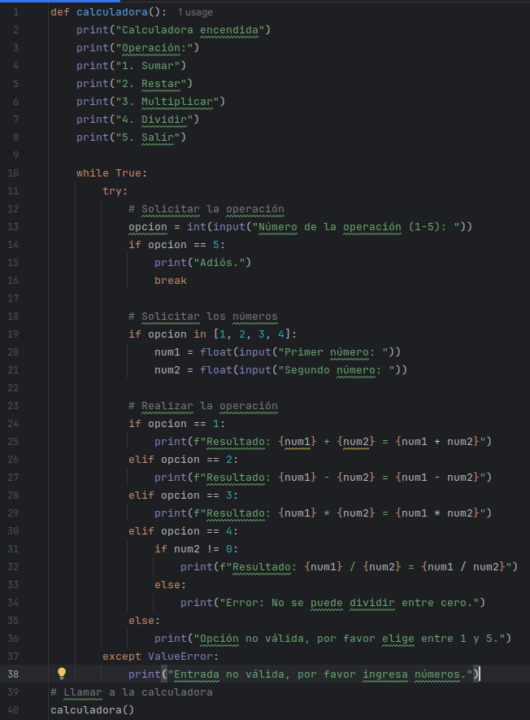

En el siguiente proyecto, desarrollo una pequeña calculadora capaz de realizar operaciones sencillas entre dos números. También les muestro como esta desarrollado el código del proyecto en lenguaje pyton.
La Calculadora Pequeñita


En el siguiente proyecto, desarrollo una pequeña calculadora capaz de realizar operaciones sencillas entre dos números. También les muestro como esta desarrollado el código del proyecto en lenguaje pyton.